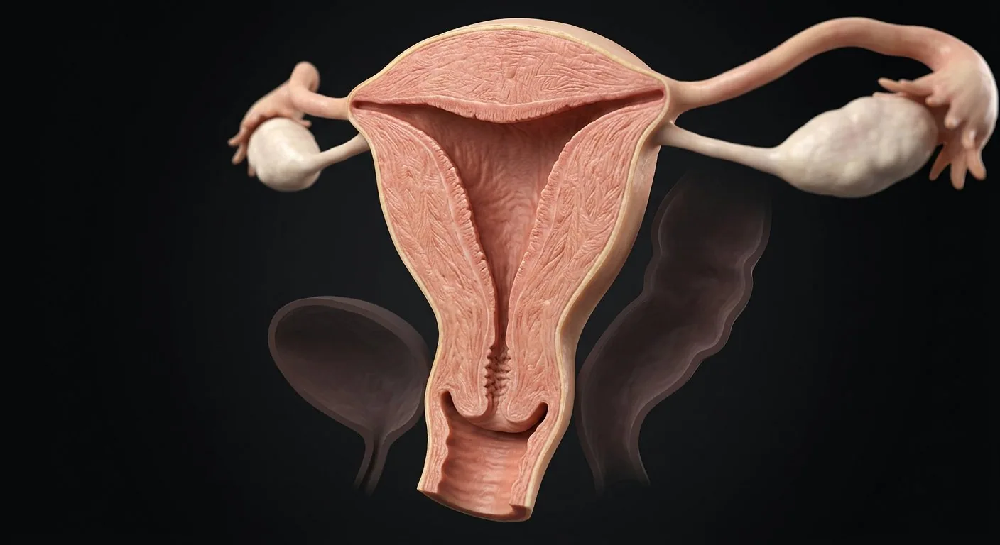

ORGAN → UNDER THE LENS
Endometrial glands and stroma
Tap to compare the organ region with a tissue-level teaching illustration.
Read about Endometrium — functionalis ↓The womb in cross-section: endometrium, junctional zone, myometrium, cavity, isthmus and the key clinical boundaries.

Endometrium — functionalisEndometrium — basalisUterine cornuaStraight basal arteriesJunctional zoneEndometrial–myometrial junctionFundal serosal surfaceFundusPerimetrium / serosaUterine cavitySpiral arteriesArcuate and radial arteriesUterine bodyUterine venous plexusMyometriumUterine isthmusInternal cervical osCervix / external osRead the uterus from outside inward, then trace the menstrual endometrium and the lower segment relevant to obstetric and surgical anatomy.
These are educational cutaways, not literal magnifications of an organ pixel or laboratory slides. A ring marks the approximate tissue region; part-specific lines appear only where identifiable.
Tap to compare the organ region with a tissue-level teaching illustration.
Read about Endometrium — functionalis ↓These 18 structures describe anatomy related to the chapter’s regional illustration. Each entry separates location, function and a clinical point.
Dome above the two tubal openings.
What it doesExpands in pregnancy; fundal position is an obstetric landmark.
Clinical connectionFundal height is a rough gestational growth marker.
Main muscular region between fundus and isthmus.
What it doesHouses uterine cavity and contracts during labor.
Clinical connectionFibroids often arise here and may distort the cavity.
Upper lateral junctions where uterine tubes enter.
What it doesCommunicate with intramural tube segments.
Clinical connectionInterstitial ectopic pregnancy arises near the cornu.
Triangular cavity between the anterior and posterior endometrium.
What it doesReceives embryo; menstrual efflux passes to cervical canal.
Clinical connectionPolyps or submucosal fibroids deform the cavity.
Superficial cyclic glandular layer; sheds with menses.
What it doesProliferates under estrogen and becomes secretory under progesterone.
Clinical connectionAbnormal bleeding can arise from altered endometrial architecture.
Deep regenerative endometrial layer next to myometrium.
What it doesRegrows the functionalis after menstruation.
Clinical connectionDamage after uterine instrumentation can cause intrauterine adhesions.
Inner myometrial zone adjacent to the endometrium.
What it doesInterface for cyclical uterine peristalsis and implantation.
Clinical connectionMyometrial tissue in the endometrium-adjacent wall is central to adenomyosis.
Thick interlacing smooth-muscle wall.
What it doesContraction in labor; compresses spiral vessels after delivery.
Clinical connectionPoor tone after birth is a major mechanism of postpartum hemorrhage.
Outer peritoneal covering where the uterus meets the pelvic cavity.
What it doesAllows gliding against adjacent viscera.
Clinical connectionAnterior and posterior reflections create pelvic pouches.
Narrow transition between uterine body and cervix.
What it doesElongates to form the lower uterine segment in pregnancy.
Clinical connectionLower-segment cesarean incisions are placed in this region.
Upper entrance of the cervical canal.
What it doesTransition from cavity to cervical conduit.
Clinical connectionImportant landmark in cervical shortening assessment.
Fibromuscular inferior uterine portion projecting into vagina.
What it doesMucus, barrier function and dilation during birth.
Clinical connectionThe transformation zone is examined in cervical screening.
Coiled branches rising from radial arteries into functionalis.
What it doesSupply cyclic endometrium and remodel with implantation.
Clinical connectionDeficient trophoblast remodeling is associated with placental disease.
Uterine arteries branch circumferentially within myometrium.
What it doesFeed radial then basal and spiral vessels.
Clinical connectionUterine artery crosses superior to the ureter close to the cervix.
Branches reaching basalis without long coiling of spiral arteries.
What it doesPerfuse persistent basal endometrium.
Clinical connectionBasalis survives normal menstrual shedding.
Thin-walled veins draining uterine walls into internal iliac tributaries.
What it doesReturns blood from myometrium and endometrium.
Clinical connectionPregnancy markedly enlarges venous channels.
Peritoneal covering over uterine fundus continuous with pelvic peritoneum.
What it doesReduces friction with neighboring bowel.
Clinical connectionSerosa is absent on some lower cervical surfaces.
Inner myometrial layer adjacent to endometrium, visible on appropriate MRI.
What it doesCoordinates uterine contractility and endometrial interface.
Clinical connectionAlteration can be associated with adenomyosis.
These 2 additional entries give anatomical context. They are deliberately not assigned a photographic pin on the regional image.
Simple tubular glands extending through uterine mucosa into stroma.
What it doesChange secretion and shape during menstrual cycle.
Clinical connectionGland pattern helps date endometrium histologically.
Cell-rich connective tissue supporting endometrial glands and spiral vessels.
What it doesDecidualizes with progesterone during pregnancy.
Clinical connectionBreakdown of functionalis contributes to menses.
Short answers grounded in the structures described above. Use the illustrated guide for anatomical context.
The uterus has an inner endometrium, muscular myometrium and outer serosal or connective covering depending on the region.
The endometrium responds to changing ovarian hormones. Its functional layer grows and changes during the cycle and is shed if pregnancy does not occur.
Dome above the two tubal openings. Function: Expands in pregnancy; fundal position is an obstetric landmark.
Upper lateral junctions where uterine tubes enter. Function: Communicate with intramural tube segments.
Function: Proliferates under estrogen and becomes secretory under progesterone. Superficial cyclic glandular layer; sheds with menses.
Follow these connected structures and body systems in the illustrated atlas.
 Implantation · blastocyst in endometriumSeparate implantation stage: endometrial receptivity, hatching, trophoblast invasion and early hCG.↗
Implantation · blastocyst in endometriumSeparate implantation stage: endometrial receptivity, hatching, trophoblast invasion and early hCG.↗ Cervix — transformation zoneThe gynecology examination landmark: external os, canal, squamocolumnar junction and transformation zone in one close-up.↗
Cervix — transformation zoneThe gynecology examination landmark: external os, canal, squamocolumnar junction and transformation zone in one close-up.↗ Ovary & uterine tubeFrom follicular cortex to ampulla: the ovary, fimbriae, tubal mucosal folds and the hidden routes of fertilization.↗
Ovary & uterine tubeFrom follicular cortex to ampulla: the ovary, fimbriae, tubal mucosal folds and the hidden routes of fertilization.↗ Pelvic support & surgical planesThe surgical map: ureter under uterine artery, uterosacral and cardinal supports, broad ligament folds, ovarian pedicle and pelvic floor.↗
Pelvic support & surgical planesThe surgical map: ureter under uterine artery, uterosacral and cardinal supports, broad ligament folds, ovarian pedicle and pelvic floor.↗General anatomy references and related source chapters for continued study. These links do not make the digital illustrations clinical images or certify every anatomical variant.
This educational page is not medical advice and has not undergone formal clinical peer review. Spotted an error? Contact the editor.
Open the realistic interactive plate, label lines, focus view and self-test.